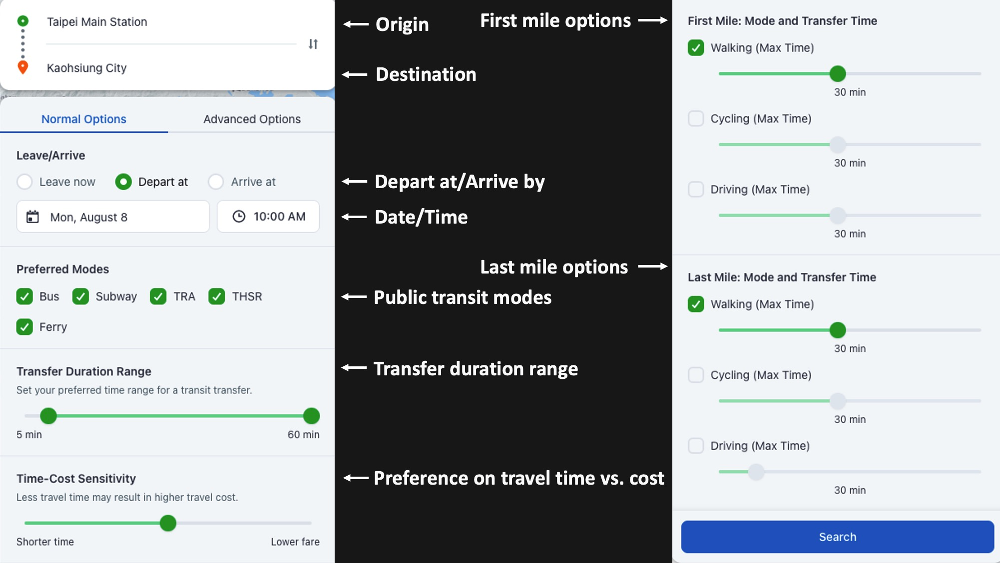

Multimodal Trip Planners
The multimodal trip planners were developed for Taiwan and the greater Houston area. With representing stops and schedules by a realistic time-expanded transit graph and applying a modified Eppstein's algorithm and heuristics methods, users can search for the available options that suits their needs in:

(Don't worry, if you feel overwhelmed by these settings, we actually have default values. But still, you are more than welcome to customize your trip if you need to.)
Taiwan
This comprehensive multimodal trip planner for Taiwan integrates nearly 9,000 routes, 65,000 stops, 200,000 daily trips across 12 modes (High Speed Rail, Rail, Bus, LRT, MRT, Ferry, Gondola, Shared Bike, Car Rental, etc., even including very local shuttle buses). This product will be delivered to Ministry of Transportation and Communications (Taiwan), together with other Mobility-as-a-Service (MaaS) computing and service platforms and products, as deliverables in UMAJI project.

Illustration by internal testing tool. Will be open to public soon.
The Greater Houston
This comprehensive multimodal trip planner for the greater Houston integrates public transits of METRO, Harris County, Woodland, Conroe, and Angleton. This engine has been integrated into the app ConnectSmart, which is sponsored by Texas Department of Transportation (TxDOT) as deliverables in ConnectSmart project.

Try our multimodal trip planner in our ConnectSmart app (Android/ IOS).
Thanks to my Metropia colleagues for their great efforts in putting the multimodal trip planners onto the website and into the app.